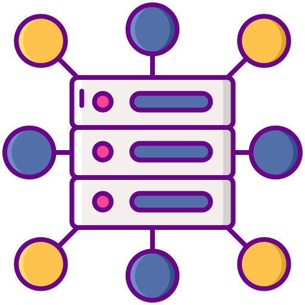
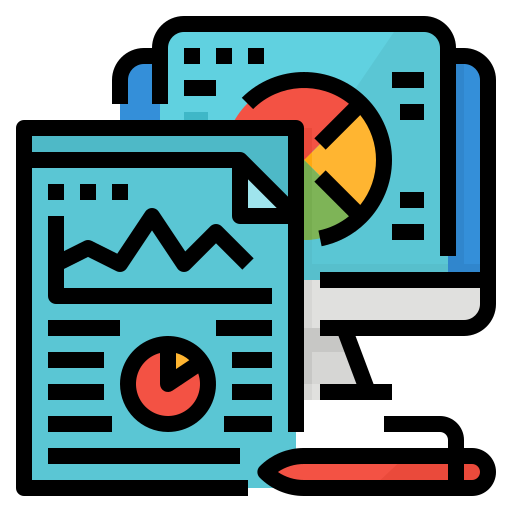

Tools and Skills
Figma, Adobe XD, Miro, Trello
goodle sheet, Photoshop, HTML, CSS Java Script, jQuery.
NAME: SODIQ OLAWALE BELLO
ROLE: UX/UI Designer
My BIO
After receiving my certification in UX/UI Research and Design from the Georgia Institute of Technology,
I continued my pursuit to understand what drives users and uncover the ideal path to user engagement.
Design tools and software such as Figma, Adobe XD, Miro, Trello, and more provide me with the instruments that I need to design,
and prototype applications that allow users to have meaningful experiences through design.
I approach design with a focus on people, establishing empathy for the user and prioritizing their satisfaction with their experience.
My design practice combines micro-interactions, animation, user insight, user research, ideation, interface design, prototyping, and user testing.
My Skills
UI (User interface), Design and information architecture, application design (iOS and Android interface).
Highly proficient in design tools like Figma, Adobe XD, Invision, Miro, Sketch.
UX (User interface), My design ability enhanced by proper and adequate user experience research.
Researches on case studies and projects are conducted with empathy and user point of view understanding, to help,
map out correctly user empathy using tools like Miro, MSExcel, Goodle sheets, google forms, custom mobile survey forms, and
elaborate questions to cover key areas in short time.
My UX Skills

USER RESEARCH
My User experience, begins with project evaluation, asking relevant questions and setting real expectations.
My research process includes.
Project objectives.
Research Questions.
User research.
Research analysis.
RAffinity Diagram.

USER EMPATHY
I analyse the understanding of users and draws the user empathy,
from extracted research data and affinity diagram to achieve the following.
Empathy map.
User journey.
Design a storyboard.
User Testing.

QUANTITATIVE INTERVIEWS
Furthermore, my approach to gathering user insight and understanding user empathy are by the following tools.
Zoom interviews.
Designed questionnaires.
Google forms.
Excel/Google sheets
Graphs
My UI Skills

DESIGN AND SKETCH
Conceptualizing user insight into sketches and visual idea for design and prototyping.
Sketching wireframes.
Sketching user flow.
Sketching icons.

PROTOTYPING
I am highly proficient in converting sketches into finished wireframes and
developing it to high definition prototypes by creating…
Wireframes.
Components and variant assets .
Designing project atoms, molecules and organisms.

USER TESTING
As an essential part of design i make sure I do adequate and enough testing,
to get user insight and feedback, so that real iterations can be made
Zoom testing.
In person user testing.
Colleagues and client feedback.
My Work
This section show the collection of projects that I have worked on,
in no particular order. I have carefully selected these projects so that I can track and show
my personal progress and development, as well as show, my journey to competence in the design world.
These projects, comprises of personal projects and some I did as a collaboration or as a team.
It was important that I show the first project and then my progress can be seen. I am constantly evolving learning
and applying the spirit of team work in my personal or team service delivery.
Case Studies
SKILLZ: SPORT NEWS, AND SPORTING SOCIAL PLATFORM
This Project was designed by a team of 3 people, We designed a
sporting social platform after a research, highlighting people need to stay informed about sporting contents.
View Case Studies
DEPARTMENT OF LABOR WEBSITE RESPONSIVE REDESIGN
In a Design challenge, A team of 3 collaborated to redesign the
US Department of Labor website and make it Tablet and Mobile responsive
View Case Studies
CIRCLE OF FRIENDS: A NON-PROFIT WEBSITE RESPONSIVE DESIGN
Circle of Friend is a non profit that help adults with IDD find job and affordable housing.
This project is a design of a new website for the non profit. High point of the design is the coffee shop design for the website
View Case Studies